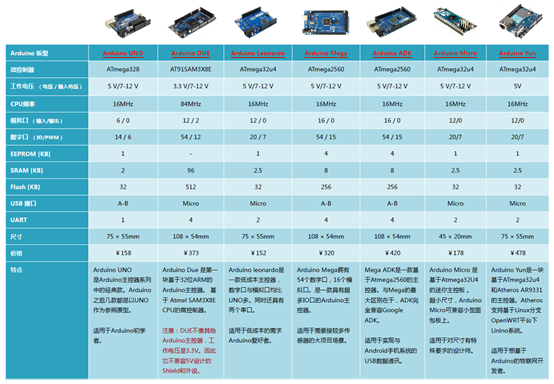

1 Arduino简介
1.1 Arduino生态简介
Arduino是一个开放源码电子原型平台，拥有灵活、易用的硬件和软件。它价格便宜，基本功能一应俱全，且有丰富的开源项目资源。是入门硬件编程和业余兴趣开发的不二之选。 常见的Arduino官方版具有如下的几种选型：
其中最常用的是UNO(ATmega328本项目中机器狗所使用的核心板)，Mega和Micro等。得益于适量的接口和低廉的价格，UNO的应用最广；Mega的功能更强大，Micro更为小巧。接下来就对UNO的主要接口进行讲述，Petoi的相关接口及应用同样可以以此为参考。
该部分只做最基础的介绍，已有一档了解的读者请跳过即可。如上图，图中标出的数字口和模拟口，即为常说的I/O。数字口有0~13，模拟口有0~5。 除了最重要的I/O口外，还有电源部分。UNO可以通过两种方式供电方式，一种通过USB供电，另一种是通过外接6~12V的DC电源。除此之外，还有4个LED灯和复位按键。ON是电源指示灯，通电就会亮了。L是接在数字口13上的一个LED。TX、RX是串口通讯指示灯，在下载程序的过程中，这两个灯会不停闪烁。 其中，接地，供电，LED等的功能是显而易见的，主要介绍串口通讯， 数字I/O，模拟I/O和PWM，了解了这些功能，你就能使用Arduino进行一些简单的开发了。
1.2 Arduino基础概念解释
什么是数字/模拟信号？ 数字信号是以0、1表示的电平不连续变化的信号，也就是以二进制的形式表示的信号。 在Arduino中数字信号通过高低电平来表示，高电平则为数字信号1，低电平则为数字信号0 ，这种电平常用作逻辑标志或周期信号
相比于数字信号，模拟信号的取值不是离散的0或者1，而是一系列的离散值。通过调制高低电平的占空比调制电压。arduino 将模拟端口的值设定在 0~1023 之间。这种IO方式常帮助我们进行与传感器的交互
PWM信号： PWM（Pulse Width Modulation）简称脉宽调制，是利用微处理器的数字输出来对模拟电路进行控制的一种非常有效的技术，简单地说就是一个具有以下特征的方波。
PWM的频率 是指在1秒钟内，信号从高电平到低电平再回到高电平的次数，也就是说一秒钟PWM有多少个周期，单位Hz。
PWM的周期 T=1/f，T是周期，f是频率。 如果频率为50Hz ，也就是说一个周期是20ms，那么一秒钟就有 50次PWM周期。
占空比 是一个脉冲周期内，高电平的时间与整个周期时间的比例，单位是% (0%-100%) 通过控制PWM以上的性质，就能够对电机，舵机，一些简单的传感器等进行控制

串口： 串口：串口是一个泛称，UART，TTL，RS232，RS485都遵循类似的通信时序协议，因此都被通称为串口。
UART接口： 通用异步收发器（Universal Asynchronous Receiver/Transmitter)，UART是串口收发的逻辑电路，这部分可以独立成芯片，也可以作为模块嵌入到其他芯片里，单片机、SOC、PC里都会有UART模块。这也是大部分单片机所采用的串口形式，利用UART，我们可以对不同的pc设备，开发板和模块进行通讯，或者进行程序烧录，debug等操作。
COM口：特指台式计算机或一些电子设备上的D-SUB外形(一种连接器结构，VGA接口的连接器也是D-SUB)的串行通信口，应用了串口通信时序和RS232的逻辑电平。
USB口：通用串行总线，和串口完全是两个概念。虽然也是串行方式通信，但由于USB的通信时序和信号电平都和串口完全不同，因此和串口没有任何关系。USB是高速的通信接口，用于PC连接各种外设，U盘、键鼠、移动硬盘、当然也包括“USB转串口”的模块。（USB转串口模块，就是USB接口的UART模块）
Arduino的编程语言： Arduino的编程语言建立在C/C++的基础上，封装了十分丰富的库文件，其中一些库文件的调用会在之后的案例中详细介绍